This is documentation for the entirety of the Catalogue Module. For specific documentation on cataloging art, archives, library books, and other materials. Please go to the workflows page.
Work
Accession Details
Accession Number
Accession Lot Number numbers are assigned to all activities related to objects, such as the purchase, donation, exhibition, or deaccession of an object or group of objects. The number represents the activity itself. For group activities, each object in the acquisition, exhibition, or deaccession is assigned the same Accession Lot Number in order to eliminate repetitive data entry. Numbering schemes vary by type of activity.
Single-Object Acquisitions
For a gift or purchase of a single item the Accession Number looks exactly the same as the Accession Lot Number: the four-digit year followed by the sequential object number.
Accession Lot Number
Accession Number
1990.12
1990.12
1996.5
1996.5
Multiple-Object Acquisitions
For multiple objects purchased or donated as a group, the Accession Number will resemble the Accession Lot Number, but will include the first and last object numbers.
Accession Lot Number
Samples of related Accession Numbers
1983.13-128
1983.13
1983.14
1983.15
Accession Lot Number
Samples of related Accession Numbers
P1990.51-79
P1990.51.1.1
P1990.55.284.1
P1990.68.100.1
Accession Lot Number
Samples of related Accession Numbers
1994.12.1-3
1994.12.1
1994.12.2
1994.12.3
Special Accession Numbers
Archives
Archives accession numbers are created with the letter A, immediately followed by the four year digit year that the item was added to the archives collection.
Crates
Accession numbers are created with the letter F, immediately followed by the four digit year in which the frame was acquired. Example: F2001.1
Deaccessioned Objects
The letter D is added to the beginning of the existing accession number for any object that has gone through the deaccession process. Examples: D1970.25, DP1977.12
Library
Library items are given a LIB, immediately followed by numbers for parts or subparts. These are ordered sequentially, with no indication of year.
Loans
Identification numbers are created with the letter L, immediately followed by the four digit year in which the object was loaned to the museum and any additional parts and subparts. Example: L1988.2
Frames
Accession numbers are created with the letter F, immediately followed by the four digit year in which the frame was acquired. Example: F2001.1
Research Collection
Accession numbers are created with the letter F, immediately followed by the four digit year in which the frame was acquired. Example: F2001.1
Accession Date
The date on which the object was added to the collection. Should match the accession lot date.
Accession Lot
The group of which the object was a part when it was added to the collection. Links to Accession Lots Module
Meeting Date
number represents the activity itself. For group activities, each object in the acquisition, exhibition, or deaccession is assigned the same Accession Lot Number in order to eliminate repetitive data entry. Numbering schemes vary by type of activity.
Object Details
Collection Type
Highest level of EMu object organization. In a broad sense, it is organized by department: Art, Archives, Loans (Registration), Crates (IPS), Research Collection (Works not owned by Amon Carter).
Archives
Art
Crates
Deaccessions
Frames
Library
Loans
Negatives and Transparencies*
*These will eventually be integrated with the art materials, but are currently for web purposes
Research Collection
Object Status
The object's status within the ACM collection. Helps distinguish permanent collection objects from loans, deaccessions, and objects that belong to other museum departments.
Object Status
Description
Archive
Archive (to be transferred to art)
Archival items that are either part of the Archives collection or in the process of moving to Art.
Deaccessioned offsite
Deaccessioned still on premises
Destroyed
Deaccessioned works that have either left the building, are still in the vaults or were destroyed.
Deaccessioned to archives
Deaccessioned to conservation
Deaccessioned to library
Deaccessioned art that was transferred to another department.
Digital only
Research materials that are not owned by the museum.
Library
Materials that are a part of the library collection. They originated with the library collection and were not a transfer from another department.
Expected loan
Loan active/offsite
Loan on premises
Loan cancelled
Loan closed/returned to lender
Loan on premises
Loans in various stages of the loan cycle. Unlike other objects statuses that may never change, loans will change status regularly.
Permanent Collection
Objects in the permanent art collection.
Permanent Object
Used for crates and frames.
Placeholder record
Records made by mistake or as placeholders until the object is catalogued.
Number of Parts
Number of parts indicates the total number of objects represented by an object record. Count is therefore an indicator of group records and deaccessioned objects. These numbers can be used in reporting to get the number of art objects.
Individual Records
P1996.16 Paul Outerbridge, Jr., H. O. Box Count: 1
Group Records
P1970.66.34 Unknown, [Tintype album containing 23 studio portraits] Count: 23
If there are individual records in addition to the group record, the count for the group record should be “0” (zero).
Two-Sided Objects
The object count for the “B” side of two-sided objects should be noted as “0” (zero).
This stipulation does not apply to photographs mounted in an album. Although the album pages may be numbered consecutively, the photographs are each classified as separate objects (numeric subparts) mounted to a common surface. The object count remains “1” for each numeric subpart.
Deaccessions
The object count for deaccessions that have not been transferred to another department is “0” (zero). All other deaccessions should follow the above guidelines.
Part Number
The part number indicates which part within the count. Individual objects will have a part number of one. A group record will indicate the accession order of the object.
Collection Status
Accession Lot Number numbers are assigned to all activities related to objects, such as the purchase, donation, exhibition, or deaccession of an object or group of objects. The number represents the activity itself. For group activities, each object in the acquisition, exhibition, or deaccession is assigned the same Accession Lot Number in order to eliminate repetitive data entry. Numbering schemes vary by type of activity.
Collection Details
Collection descriptions.
Collection Name
Collections are defined as significant groups of objects acquired from the same source at approximately the same time. Collection Name is derived from the source.
American Artists Group Collection
American Labor Prints Collection
Amon G. Carter Collection
Bureau of American Ethnology Collection
Carlotta Corpron Collection
Carlotta Corpron Papers
Casasola Collection of Rurales Photographs
Charles Williams Papers
Clara E. Sipprell Collection
Clara E. Sipprell Papers
Clifton Texas Collection
Craig Rhea Collection of Karl Struss Papers
Donald Marron Collection
Earl Alonzo Brininstool Collection
Eliot Porter Bequest
Eliot Porter Papers
Erwin E. Smith LC Collection
Erwin E. Smith Papers
Erwin E. Smith Pettis Collection
Exhibition History Records
Fort Worth Museum of Science and History Gentling Collection
Fred and Jo Mazzulla Collection
George Bellows Estate Set of Graphic Art
Helen M. Post Collection
Helen Post Papers
Historical Artists Materials Collection
Inuit Art Collection
John L. Bishop Collection
José Guadalupe Posada Collection
Karl Struss Collection
Laura Gilpin Bequest
Laura Gilpin Papers
Mary Everhard Collection
Mazzulla Collection
Nell Dorr Estate Collection
Nell Dorr Papers
Patrick E. Porter Collection of Eliot Porter Papers
Porter Family Collection of Eliot Porter Papers
Roman Bronze Works Archive
Sarah Ann Hardinge Family Papers
Scott and Stuart Gentling Collection
Scott and Stuart Gentling Papers
Scott and Stuart Gentling Research Collection
Stephen Porter Collection of Eliot Porter Papers
Stephen White Collection of Karl Struss Papers
Stuart Davis Estate Set of Graphic Art
Tamarind Lithography Workshop Collection
Texas Architectural Survey
William (Ed) Irwin Collection
William Clark Collection
Zoe Davis Collection
Numbering Details
Numbered
Denotes whether the accession number has been recorded on the object.
Date Numbered
Date current accession number was recorded on object.
Location of Number
Where accession number is recorded on object.
Title
Object Details
Object Status
The institution that acquired the accession lot. Used to for receiving institution or funder. Amon Carter Museum will be the default for gifts.
The part number indicates which part within the count. Individual objects will have a part number of one. A group record will indicate the accession order of the object.
Accession Details
Accession Number
Accession Lot Number numbers are assigned to all activities related to objects, such as the purchase, donation, exhibition, or deaccession of an object or group of objects. The number represents the activity itself. For group activities, each object in the acquisition, exhibition, or deaccession is assigned the same Accession Lot Number in order to eliminate repetitive data entry. Numbering schemes vary by type of activity.
Single-Object Acquisitions
For a gift or purchase of a single item the Accession Number looks exactly the same as the Accession Lot Number: the four-digit year followed by the sequential object number.
Accession Lot Number
Accession Number
1990.12
1990.12
1996.5
1996.5
Multiple-Object Acquisitions
For multiple objects purchased or donated as a group, the Accession Number will resemble the Accession Lot Number, but will include the first and last object numbers.
Accession Lot Number
Samples of related Accession Numbers
1983.13-128
1983.13
1983.14
1983.15
Accession Lot Number
Samples of related Accession Numbers
P1990.51-79
P1990.51.1.1
P1990.55.284.1
P1990.68.100.1
Accession Lot Number
Samples of related Accession Numbers
1994.12.1-3
1994.12.1
1994.12.2
1994.12.3
Archives
Archives accession numbers are created with the letter A, immediately followed by the four year digit year that the item was added to the archives collection.
Crates
Accession numbers are created with the letter F, immediately followed by the four digit year in which the frame was acquired. Example: F2001.1
Deaccessioned Objects
The letter D is added to the beginning of the existing accession number for any object that has gone through the deaccession process. Examples: D1970.25, DP1977.12
Library
Library items are given a LIB, immediately followed by numbers for parts or subparts. These are ordered sequentially, with no indication of year.
Loans
Identification numbers are created with the letter L, immediately followed by the four digit year in which the object was loaned to the museum and any additional parts and subparts. Example: L1988.2
Frames
Accession numbers are created with the letter F, immediately followed by the four digit year in which the frame was acquired. Example: F2001.1
Research Collection
Accession numbers are created with the letter F, immediately followed by the four digit year in which the frame was acquired. Example: F2001.1
Accession Date
Accession Lot Number numbers are assigned to all activities related to objects, such as the purchase, donation, exhibition, or deaccession of an object or group of objects. The number represents the activity itself. For group activities, each object in the acquisition, exhibition, or deaccession is assigned the same Accession Lot Number in order to eliminate repetitive data entry. Numbering schemes vary by type of activity.
Accession Lot
Accession Lot Number numbers are assigned to all activities related to objects, such as the purchase, donation, exhibition, or deaccession of an object or group of objects. The number represents the activity itself. For group activities, each object in the acquisition, exhibition, or deaccession is assigned the same Accession Lot Number in order to eliminate repetitive data entry. Numbering schemes vary by type of activity.
Other Numbers
Type
Other numbers used to identify the object.
Former - Tracking numbers assigned by the artist. Used in the Eliot Porter and Laura Gilpin collections.
Loan - "L" numbers used to track incoming loans and temporary deposits.
ACMAA Library Call Number- Used for prints from library rare book collection.
Number
Other numbers used to identify the object. May contain loan numbers, library call numbers, or former numbers used by the artist. Transcribe most numbers verbatim; for Porter former numbers, replace hyphens with periods.
Title Details
Main Title
Title is to be used for all publications and object labels. However, it is the curator’s prerogative to use a different title at any given time.
The Title is recorded by the cataloguer on the cataloguing worksheet. It is the primary name by which the object is known. It may be a transcription of the title listed on the vendor's invoice, inscribed on the object or housing, or recorded in an alternate source of information provided by the artist. The curator may correct or change the Title upon review of these materials. The title is recorded in Chicago style title case (see notes below).
1961.19
The Broken Rope
1971.38
Clipper Ship "Comet" of New York
1985.37
The Appeal to the People
P1984.35.54
Under the El at the Battery
A description of the image is to be recorded when no formal Title can be determined. It is initially assigned by the cataloguer and may be later modified by the curator. When assigning descriptive titles to a large group of similar images, every effort should be made to reference the unique features or appearance of the object that distinguish it from others in the group. Descriptive Titles are recorded in brackets and in sentence case: capitalize the first letter of the first word and proper names; leave all other words lowercase.
1990.23.1
[Introduction page for "Portfolio No. 1"]
1990.23.2
[Contents page for "Portfolio No. 1"]
1995.11
[Child with fruit]
P1994.4.1
[Cactus with blue cross and flowers]
P1990.45.199
[Jacket cover photo for “Mother and Child,” first edition]
Parent Title
Parent Title refers to the title of the album, book, portfolio, magazine, or other publication from which the object originated. The date of publication is to be included if said date is specifically included in the original or approved title, e.g. volume titles transcribed from a library catalogue.
The parent title is recorded in the Title ParentParent Title field, immediately following the Title field. Explications such as "from," "from the portfolio," "originally published in," etc., should be included.
1967.194.13
Title: View near Hudson
Parent Title: [No. 15 of the “Hudson River Port Folio”]
P1984.30.18
Title: Ruins of Norfolk Navy Yard
Parent Title: [from “Gardner’s Photographic Sketch Book of the War. Volume 1.”]
Alternate Titles
Alternate Titles are other titles under which the object has been published, exhibited, or otherwise known. An object may have more than one Additional Alternate Title. Descriptive Titles may be recorded as Additional Alternate Titles when the object already has a formal Title.
Record the Additional Alternate Title in regular title case unless specifically documented as published or exhibited with nonstandard title case. Descriptive Additional Alternate Titles are recorded in brackets and in sentence case, as above.
1985.39
Title: Speicher Drawing
Alternate Title: Gene Speicher Drawing on a Stone | Artist Drawing
1986.17
Title: The Coast at Beverly
Alternate Title: Cliffs at Newport, Low Tide
Title Notes
Accession Lot Number numbers are assigned to all activities related to objects, such as the purchase, donation, exhibition, or deaccession of an object or group of objects. The number represents the activity itself. For group activities, each object in the acquisition, exhibition, or deaccession is assigned the same Accession Lot Number in order to eliminate repetitive data entry. Numbering schemes vary by type of activity.
Title Format
( ), [ ], " " When these punctuation marks enclose the whole title, omit them. If the artist used these marks to punctuate a title within a title or an explanatory phrase within a title, then record as inscribed, verbatim.
. Some inscriptions end with a period or have two-part titles, each with a period. Record these as inscribed.
& Record if printed or inscribed. Do not substitute "and" without specific and contrary directive from Curatorial or the living artist.
Capitalization If the inscription includes nonstandard capitalization (i.e. all lowercase or all uppercase, capital letters in the middle of words) or does not capitalize names or proper nouns, correct the capitalization to reflect the title style described above, unless specific and contrary directive is made by the living artist or Curatorial.
Do capitalize:
All nouns and pronouns, e.g. “It, Its, His, That, This, My”
All verbs, except "to" when part of the infinitive verb form, e.g. "to Go," is in lower case.
All adjectives and adverbs, e.g. “Very, Well, Badly”
All prepositions of 5 letters or more, e.g. “After, Beneath, Through”
All subordinate conjunctions, e.g. “That, Which, Who”
The first and last words of the title regardless of part of speech
Do not capitalize:
Prepositions of 4 or fewer letters, e.g. “from, in, at”
Coordinate conjunctions, e.g. “and, but, or”
Articles, e.g. “a, an, the”
Scientific nomenclature In both titles and running text, technical scientific names are to be capitalized according to scientific and Latin convention: the genus name is always capitalized, and the specific epithet is never capitalized (even though it may be a proper adjective), without any intervening punctuation.1 If the printed text from which the title is transcribed is printed in all caps, record the title in all caps in Inscriptions but then record the title in correct Latin capitalization in the appropriate title field. Scientific binomial nomenclature is customarily set in italics; ACM Publications will oversee the typesetting details for labels or publications.
Dates in titles If a date has been included in the artist’s own inscription of the title or in the artist’s documented original title, then that date is likewise included in the Title and formatted accordingly. This guideline also applies to works such as inscribed field studies or documented pages from a field sketchbook. Judgment of sufficient documentation is left to the discretion of the curator.
Valley of the Chugwater, Wyoming Territory, August 8, 1870
La Parroquia, Santa Fe, New Mexico, 1849
Chinese Irrigation Nevada, August 9
Long titles Some historical prints have very long inscriptions. The project curator will make the judgment as to what should be the Title and what should be recorded only as an inscription. Very long titles may also be terminated with ellipses.
Misspelled words Words spelled incorrectly in the inscription from which the title is transcribed are generally recorded as-is, and “[sic]” is inserted after the misspelled word, particularly if it is a nineteenth-century work. “Sic” is a complete word, not an abbreviation, and takes no period. It is customarily set in italics; ACM Publications will oversee the typesetting details for labels or publications.
The Hunted Buffalo. A Scene on the Prairie [sic].
Dog-Sledges [sic] of the Mandan Indians
The Falls of Cattskill [sic], New York
Med/Dims
Medium Details
Object Type
Used only for art objects. This field organizes parts of the collection and helps to differentiate between photographs, paintings, sculpture, etc. This field is used for the website. Please discuss changes or additions to this field with the EMu Admin and web team.
Drawings
Objects
Paintings
Photographs
Prints
Sculptures
Watercolors
Object Type Detail
Used only for art objects. This field organizes parts of each of the collections. It defines larger groups within these collections. This field is used for the website. Please discuss changes or additions to this field with the EMu Admin and web team.
Object Type Detail by Object Type
Drawings
Graphite drawings
Mixed-media drawings
Paintings
Oil paintings
Photographs
Albumen prints
Daguerreotypes
Ambrotypes
Tintypes
Cyanotypes
Dye coupler prints
Dye destruction prints
Dye diffusion prints
Dye imbibition prints
Gelatin silver prints
Inkjet prints
Photomechanical prints
Platinum/palladium prints
Prints
Intaglio prints
Lithographs
Photomechanical prints
Screen prints
Relief prints
Printing blocks
Sculptures
Cast sculptures
Carved sculptures
Medium
Medium is a free text field. Below is a chart for basic medium creation. Please go to this link for further details regarding mediums.
Object Type
Object Type Detail
Medium Field
Medium Notes
Format
Drawings
Graphite drawings
Mixed-media drawings
Medium and any unusual supports
For works on paper, additional paper information
1/2 plate
1/4 plate
1/6 plate
1/9 plate
Album
Badge
Bas-relief
Bon-ton tintype
Book
Boudoir card
Cabinet card
Calendar
Carte-de-visite
Cased photograph
Chapbook
Cigarette card
Diptych
Gem tintype
Imperial card photographs
Lost-wax casting
Mammoth plate
Panorama
Periodical
Photocollage
Photogram
Photomontage
Polyptych
Portfolio
Postcard
Promenade card
Sand casting
Sketchbook
Stereograph
Suite
Tin Victoria tintypes
Triptych
Uncased plate
Whole plate
Work print
Objects
N/A
Medium
N/A
Paintings
Oil paintings
Medium and support
For works on paper, additional paper information
Photographs
Albumen prints
Daguerreotypes
Ambrotypes
Tintypes
Cyanotypes
Dye coupler prints
Dye destruction prints
Dye diffusion prints
Dye imbibition prints
Gelatin silver prints
Inkjet prints
Photomechanical prints
Platinum/palladium prints
Medium
Optional paper information if known
Prints
Intaglio prints
Lithographs
Photomechanical prints
Screen prints
Relief prints
Printing blocks
Medium and any additional mount or non-paper support
Sculptures
Cast sculptures
Carved sculptures
Medium
Cast sculptures- composition of metals if relevant
Watercolors
N/A
Medium and any unusual supports
For works on paper, additional paper information
Format
Used only for art objects. This field provide additional information for categorization. These terms can be applied to any medium as needed. This field is used for the website. Please discuss changes or additions to this field with the EMu Admin and web team.
1/2 plate
1/4 plate
1/6 plate
1/9 plate
Album
Badge
Bas-relief
Bon-ton tintype
Book
Boudoir card
Cabinet card
Calendar
Carte-de-visite
Cased photograph
Chapbook
Cigarette card
Diptych
Gem tintype
Imperial card photographs
Lost-wax casting
Mammoth plate
Panorama
Periodical
Photocollage
Photogram
Photomontage
Polyptych
Portfolio
Postcard
Promenade card
Sand casting
Sketchbook
Stereograph
Suite
Tin Victoria tintypes
Triptych
Uncased plate
Whole plate
Work print
Medium Notes
Used only for art objects. This text field contains additional medium information such as brand information.
Measurement Details
Type
The type of dimension recorded.
Two Dimensional Objects
Record the maximum outer dimensions in this order: height x width. Always round up to the nearest 1/8-inch for sculpture or paintings on canvas and 1/16-inch for works on paper and photographs. Always use standard units rather than metric.
Image size refers to the actual area covered by the photographic image, paint, ink or print. It is "where the picture stops."
Plate size refers to the size of plate; measure the distinct indentation of the plate mark in the paper.
Sheet size refers to the piece of paper, metal, glass or canvas on which the medium is directly applied.
Mount size refers to the paper, board, or album page on which the sheet is attached, dry mounted, glued, or otherwise permanently adhered. Mount does not refer to stretcher bars. Stretcher bars are not normally measured or recorded.
Mat size refers to the size of the outermost edge of the mat, not the window. We need the largest measurement for framing. Mats may change, but mat sizes will typically not. If the item will be stored in this mat, we need the dimension. Change each time the item is matted.
When images or sheets are not square, add [irreg.] after the applicable dimension.
Do not use hyphens [-] or dashes [—] when entering dimensions.
Three Dimensional Objects
Record maximum outer dimensions, except as noted below. Always round up to the nearest 1/8-inch or ounce.
Take measurements according to the following guidelines:
Paintings
Height
Width
Framed Height
Framed Width
Framed Depth
Works on Paper and Photographs
Image Height
Image Width
Sheet Height
Sheet Width
Mat Height (Optional)
Mat Width (Optional)
Mount Height (Optional)
Mount Width (Optional)
Sculpture
Height
Width
Depth
Base Height
Base Width
Base Depth
Mass
Archival Documents
Height
Width
Archival Artwork
Follow artwork standards based on medium.
Archival Realia
Follow sculpture standards
Library Books
Height
Width
Value
Value recorded in a fraction. Round to the nearest 1/16th for works on paper and photographs. Round to the nearest 1/8th for paintings and sculpture.
Unit
Will always be "inches" or "pounds".
Metric Value
Value in centimeters. Preference is to measure both, but you can also use conversion tools to convert value. Round to the nearest tenth.
Metric Unit
Will always be "cm" or "kg".
Inscriptions
Inscribed text or marks are recorded in the Inscriptions field.
Two Dimensional Objects
Use the following format:
Inscription surface, recto/verso:
Grid position (supplementary surface,) (additional description of position,) inscription medium: inscription text line 1 \ inscription text line 2 [additional explanation or interpretation]
Identify and record each major planar surface that bears an inscription (e.g. image, sheet, [photo] print or mount) as a capitalized heading on the accession worksheet or in the superfield, and specify “recto” or “verso”, followed by a colon.
If there are not any inscriptions, record “[None]” in the field. This will indicate that inscriptions have been verified. There is not a need to record none for every planar surface.
Record the general position of the inscription, using the following grid and abbreviations:
u.l.
u.c.
u.r.
c.l.
c.
c.r.
l.l.
l.c.
l.r.
If the inscription is not written on the actual surface of the object or mount but on a supplementary surface, record a succinct description of the supplementary surface, e.g. “on white label” or “on green masking tape,” followed by a comma.
Inscriptions recorded during process, such as “on stone,” “in plate,” or “in negative,” are considered legitimate and are to be recorded with that implied surface specified. Make precise use of the descriptor “in image”— use only when the inscription is arguably within the image and not merely within the physical boundaries of the stone, plate, or negative.
Record any additional description of position, as necessary, e.g. “along top edge of sheet” or “beneath plate mark,” followed by a comma.
Record the medium of the inscription itself, i.e. the material or technical means with which the inscription was made, followed by a colon. For example: “in ink:”; “in graphite:”; “typewritten”; “in white paint”. If no supplementary surface or additional description of position is included, do not place a comma between the grid location and the medium of the inscription.
Use the term “in graphite” rather than “in pencil”. However, if a colored pencil is used, specify the color (as it is not composed of graphite). Color of ink may be specified at the discretion of the cataloguer.
Following the colon, record all inscriptions verbatim (letter for letter), including any and all capitalization, punctuation, and diacritical marks. Do not use quotation marks unless they actually appear in the text of the inscription.
Distinguish inscriptions from text that is part of the work of art. Do not record as inscriptions non-annotating words or text characters inscribed upon the work. This guideline is directed toward inscriptions made in the object’s catalogued medium/media. Designation of what is and what is not an inscription is left to the cataloguer. Ex.: Signature and date in oil paint on an oil-on-canvas painting is an inscription. The word “Blips” in oil paint on an oil-on-canvas painting is not an inscription, e.g. 1967.195
Record the text of the inscription from left to right and then from top to bottom. An inscription that extends more than one line on the object should be recorded with a single backslash in place of each line break; two spaces should both precede and follow the backslash.
If an object surface bears multiple inscriptions, record them in order from left to right and then from top to bottom, using the same guidelines listed above for each inscription.
Enclose any subsequent explanatory/interpretive descriptors in brackets, e.g. [illeg.], [circled], [sic]. If the descriptor only applies to a specific portion of the preceding text, repeat that text as necessary.
When positive identification can be made or has been made, annotate all inscriptions made in the artist’s own hand, e.g. [artist’s hand]
Use the descriptor “lettered” and not “printed” to refer to mechanically or electronically printed lettering.
Sheet, Recto:
u.l. along top edge of sheet in graphite: No. 23-1 [illeg.] final
Sheet, Verso:
u.c. in ink: Erwin Smith
u.r. on white label, typewritten: Lot C3
c.l. on green label, printed: H. V. Allison Galleries, Inc. \ New York City \ Artist John Doe [John Doe typewritten and underlined] \ Title Trees by Pond [Trees by Pond typewritten and underlined] \ Medium oil on panel [oil on panel typewritten and underlined]
Mount, Verso:
c. in graphite: Forth Worth [sic]
c. on white label in red ink: $45.00 [00 underlined]
When there are not inscriptions for one or more surfaces:
There are no inscriptions on the work:[None]
There are inscriptions on the verso and not the recto:
Correct:
Verso: c. in graphite: Forth Worth [sic] c. on white label in red ink: $45.00 [00 underlined]
Incorrect:
Recto: [None] Verso: c. in graphite: Forth Worth [sic] c. on white label in red ink: $45.00 [00 underlined]
Two sided objects
When recording inscriptions on objects that are two-sided and catalogued as two alphabetic subparts, do not record the same inscription twice. Instead, record a reference to see the record for the opposite side of the object; “[see A/B-side]” should suffice.
Photographs mounted in an album are not subject to this guideline. Although the album pages may be numbered consecutively, the photographs are classified as separate objects (numeric subparts) mounted to a common surface. Record inscriptions on photographs in albums in the conventional manner.
1997.4.A
Verso:
u.c. along edge, handwritten in graphite [see B-side]
1997.4.B
Recto:
c.l. along edge, handwritten in graphite: Breakdown \ F.O.-(17)-593 \ William H. Johnson
Three Dimensional Objects
Record the location, location qualifier, location description, and medium of the inscription, followed by a colon.
Following the colon record all inscriptions verbatim (letter for letter) as with two-dimensional works.
Location indicators such as ‘proper left arm’ or ‘proper right ear’ may be used.
Descriptive explanations such as [cow skull] may be used if enclosed in brackets to describe an illustrated inscription.
Base, near p.r. forward foot, inscribed: Roman Bronze Works Underneath base, in black marker: 12
Creation
Displays catalogue records attached to lot.
Creator Details
Name
Creator of the work. This is an attachment field, go to Parties Module for more information about this field. Multiple can be added.
Role
The role the artist for this particular work. Note that a party can have multiple roles, but this is where the role for the particular piece is recorded. If the artist has multiple roles in the piece, they should be recorded multiple times. For more role ideas, please refer to the parties module here.
Role
Description
Aquatint by
Individual or company who marked the plate from which the image was printed.
Artist*
Principal artist or maker.
Artist Attributed to
Individual who is generally recognized to be the artist or maker.
Artist Possibly
Individual who is recognized by some research to be the artist or maker.
Artist Probably
Individual who is recognized by most research to be the artist or maker.
Artist After
Individual who created the original image from which a print was produced.
Artist Probably After
Individual who is recognized by most research to be the creator of the original image from which a print was produced.
Artist Possibly After
Individual who is recognized by some research to be the creator of the original image from which a print was produced.
Artist Formerly Attributed to
Individual who was formerly generally recognized to be the artist or maker. td>
Author
Author, if he/she is different from the artist.
Cast by
Individual or organization who performed the casting, when known.
Commissioned by
Individual or institution who commissioned the object, when known.
Drawn on Stone by
Individual or company who etched or drew the image on the lithographic stone.
Drawn on Stone by Possibly
Individual or company recognized by some research to have etched or drawn the image on the lithographic stone.
Drawn on Stone by Probably
Individual or company recognized by most research to have etched or drawn the image on the lithographic stone.
Engraved by
Individual or company who engraved the plate from which the image was printed.
Engraved by Possibly
Individual or company recognized by some research to have engraved the plate from which the image was printed.
Engraved by Probably
Individual or company recognized by most research to have engraved the plate from which the image was printed.
Expedition of
Name of the expedition, expedition leader, or survey during which the object was created.
Hand Colored by
Individual who hand-colored the print. | Usually used for Prints, sometimes Photographs.
Letterpress by
Individual who typeset the letters from which the image was printed.
Letterpress printed by
Individual who printed the letterpress image.
Lithographed by
Individual or company inscribed or lettered on the print as “lithographed by.”
Lithography Firm of
Company that produced the print.
Lithography Firm of Possibly
Company recognized by some research to have produced the print.
Lithography Firm of Probably
Company recognized by most research to have produced the print.
Manufactured by
Company that manufactured the object.
Printed by
Individual who printed the print.
Printed by Possibly
Individual recognized by some research to have printed the print.
Printed by Probably
Published by
Institution that published the portfolio, book or other volume from which the object came or of which the object is a part.
Published by Possibly
Institution recognized by some research to have published the portfolio, book or other volume from which the object came or of which the object is a part.
Published by Probably
Institution recognized by most research to have published the portfolio, book or other volume from which the object came or of which the object is a part.
Received by
Individual which received a letter in the artist archives. Used to differentiate between letters sent to the artist and from the artist.
Signed on Stone by
Individual whose name is inscribed on the printing stone. Usually the same as the artist.
Signed on Stone by Possibly
Individual whose name may be inscribed on the printing stone.
*Required and should be the first entry. If the artist is unknown, add "Unknown" with a role of "Artist".
Depending on the type of object, one or more of the following dates will be recorded:
Date of Object*
Date Printed
Date Cast
Date of Subject
Date Published
*Every object must have a date of object. The date of object is used for reporting.
Date
Text date. Use the following formatting rules for creation.
Date Format
The YEAR is entered numerically.
The MONTH, if used, is alphabetic and abbreviated to three letters (except for May).
The DAY, if used, is entered numerically, followed by a comma or a hyphen to indicate a passage of time.
If a date range is specified, no spaces are used before or after the en dash.
Aug. 29, 1940
Oct. 21–Nov. 4, 1967
Dec. 18, 1967–Jan. 12, 1968
The following qualifiers may be used in addition to a date:
ca.
Abbreviation for “circa” denotes an approximate date; best interpreted as “about”, rather than “around.” Use one period, followed by one space.
The following qualifiers denote uncertainty and therefore do not need “ca.” added to the date. These dates do not follow the circa range date guidelines for the earliest and latest dates. Refer to examples below for calculating earliest and latest dates. If there is a greater uncertainty than the default range allows, edit earliest and latest dates as necessary.
before
Indicates a range of years before the date.
after
Indicates a range of years after the date.
early
Narrows the range of years to the beginning of the range.
mid
Narrows the range of years to the middle of the range.
late
Narrows the range of years to the end of the range.
s
Suffix, denotes a decade. Do not use apostrophe.
If the date is uncertain but a possible or probable dates is known, use “ca.” in the Date of Object field. Circumstances of the uncertainty may be described in the Discussion field.
If no date has yet been determined, “n.d.” may be used. However, ca. ranges are preferable. Note that n.d. will not include earliest and latest dates.
Use month, day, year order. September 1, 1991. Do not write the day as an ordinal (September 1 not September 1st).
If only month and year are given, there is no comma: They moved to Atlanta in early September 1991.
Use an en dash to separate dates used inclusively. 1890–1950; 1952–58
Earliest
Used for searching. Earliest probable creation date. Look for more details below.
Latest
Used for searching. Latest probable creation date. Look for more details below.
Format
Any date entered between:
Uncertainty Range
Example
"ca. 1600" and "ca. 1899"
+/- 25 years
Date Entered: ca. 1875
Default range: 1850–1900
"ca. 1890" and "ca. 1919"
+/- 10 years
Date Entered: ca. 1900
Default range: 1890–1910
"ca. 1920" and "ca. 2000"
+/- 5 years
Date Entered: ca. 1964
Default range: 1959–1969
Date Entered
Date Range Default
Modified Date Range for specific interpretation
ca. 1940-1941
1935–1946
1940–1941
Either 1940 or 1941
ca. 1940
1935–1945
1940–1941
Either 1940 or 1941
Aug. 1940–Sep. 1941
1940–1941
1940–1941
From August 1940 until Sep. 1941
Aug. 21, 1940–Sep. 30, 1941
1940–1941
1940–1941
From August 21, 1940 until September 30, 1941
Jul.–Aug. 1940
1940
1940
From July through August 1940
Aug. 20–23, 1940
1940
1940
From August 20 through 23,1940
Jul. 21, 1940–Aug. 1941
1940
1941
From July 21, 1940 through August 1941
ca. 1940–1942
1935–1947
1935–1947
1940, 1941 or 1942
1940s
1940–1949
1940–1949
Sometime between 1940-1949
after 1864
1864–1889
1864–1889
Sometime after 1864, added the 25 uncertainty date
before 1884
1859–1884
1859–1884
sometime before 1884, added the 25 uncertainty date
Early 20th century
1900–1950
1900–1950
Sometime during the first half of the 20th century
Late 19th century
1850–1889
1850–1889
Sometime during the second half of the 19th century
Subject Classification
Title Notes
Accession Lot Number numbers are assigned to all activities related to objects, such as the purchase, donation, exhibition, or deaccession of an object or group of objects. The number represents the activity itself. For group activities, each object in the acquisition, exhibition, or deaccession is assigned the same Accession Lot Number in order to eliminate repetitive data entry. Numbering schemes vary by type of activity.
Provenance
Title Notes
Accession Lot Number numbers are assigned to all activities related to objects, such as the purchase, donation, exhibition, or deaccession of an object or group of objects. The number represents the activity itself. For group activities, each object in the acquisition, exhibition, or deaccession is assigned the same Accession Lot Number in order to eliminate repetitive data entry. Numbering schemes vary by type of activity.
Order
Provenance is recorded in chronological order, beginning with the earliest known owner and concluding with the Amon Carter Museum. Each entry is separated with a semicolon. Do not place a period at the end of the provenance. Each entry should be organized in this manner: Name or Institution, City, State, date; Spell out the names of all cities and states.
Mr. Fred Smith, Santa Fe, New Mexico, until 1978; Amon Carter Museum, Fort Worth, Texas
Gaps
If the ownership of a work of art is unknown for a period of time, and this period falls between two known owners, place a brief description of this period in parentheses:
Mr. Fred Smith, Santa Fe, New Mexico, until 1978; (unknown, 1978–1982); private collection, 1982-1985; Amon Carter Museum, Fort Worth, Texas
Mr. Fred Smith, Santa Fe, New Mexico, until 1978; (possibly in New York, New York, 1978–1982); private collection, 1982–1985; Amon Carter Museum, Fort Worth, Texas
Dates
If the last year of ownership is known, enter the last year at the end of the entry, preceded by a comma. Write out the full four-digit year. The following are acceptable forms: "until 1945"; "1933–1945"; or "1945" if only held during a single year.
Private Owners
“Private Owner” refers to known individuals, families or museums. Do not use brackets around the entry. However, if a family relationship between owners is known, this relationship may be added in parentheses, e.g. (the artist's wife). Always capitalize the word Estate, but not private collection or artist. Spell out each city and state.
Colonel Edward Riley Bradley, Lexington, Kentucky, until 1946; Camilla Davis Leonard Edwards (his widow), New York, New York
If the provenance includes an anonymous donor, that period of ownership is listed as “private collection” in the provenance.
Estate of the artist; private collection, 1983; Amon Carter Museum, Fort Worth, Texas
Dealers
When a dealer assumes ownership or acts as an agent for the sale of an object, use brackets around the entry.
[Ward Eggleston Galleries, New York, New York], in 1948;
Auctions
When a work passes from the known owner through an auction or similar sale, record as: (Auction House, City, State, Sale, Date, Lot. No.); Spell out each city and state:
The artist, (American Art Galleries, New York, New York, Catalogue of a Collection of Paintings, Drawings and Watercolors by Frederic Remington, A.N.A., Sale January 13, 1893, Lot No. 58);
Frank Nichols Stewart; (Chapman’s, Edinburgh, Scotland, Sale June 16–17, 1871);
The Estate of Robt. W. Redford, Montreal, Quebec, Canada; (Sotheby & Co. Ltd., Canada, at The Robert Simpson Company, Ltd., Toronto, Ontario, Canada, Sale October 28, 1968, Lot No. 175);
Mrs. Henry Harper Benedict; (Sotheby & Co., London, England, “Modern British Drawings and Sculpture,” Sale November 21, 1962, Lot No. 3 as “Portrait of a Lady”);
Estates
If the party in question is the estate of the artist, and the name of estate has not been registered as a specific legal entity, use the term “Estate of the artist.” If the estate has been registered, use the legal name (including the word “The,” if necessary) both in the provenance and in the credit line.
Other
Other information about the ownership or sale of an object, such as the date of death of the owner, description of the means of acquisition (including trade, transfer, gift, etc.) is not included in the provenance citation, but is documented in the physical object file.
Incorrect The artist; at his death to his daughter, Mrs. Jonathan Scott Hartley, New York, New York;
Correct The artist; Mrs. Jonathan Scott Hartley (his daughter), New York, New York;
Incomplete, unconfirmed entries or fragmentary information should be placed in set brackets : {}
These additional examples are provided as a reference. Many unusual scenarios and variations may be found in provenance histories, both in the database records and the object files.
1961.426
Possibly owned by Mrs. Collier, c. 1931; [Howard Young Galleries, New York, New York]; Colonel Edward Riley Bradley, Lexington, Kentucky, until 1946; [Howard Young Galleries, New York, New York]; [Ward Eggleston Galleries, New York, New York], in 1948; [David B. Findlay Galleries, New York, New York], in 1949; Amon G. Carter, Sr., Fort Worth, Texas
1966.17
The artist; Alfred Steiglitz, New York, New York; Georgia O'Keeffe, Abiquiu, New Mexico, until 1966; Amon Carter Museum, Fort Worth, Texas
1980.47
Fred Mazulla, Denver, Colorado; Amon Carter Museum, Fort Worth, Texas
1985.32
Estate of the artist; Emma S. Bellows (the artist's wife), New York, New York, 1925-1959; the Estate of Emma S. Bellows [with H. V. Allison Galleries, Inc., New York, New York], until 1985; Amon Carter Museum, Fort Worth, Texas
P1967.45
E.A. Brininstool, until 1930s; Robert Ellison; Mrs. Robert Ellison; Fred Rosenstock, Denver, Colorado, until 1967; Amon Carter Museum, Fort Worth, Texas
P1978.120
Mary Everhard, Leavenworth, Kansas; Mr. Phillips, 1960s–1978; Amon Carter Museum, Fort Worth, Texas
P1989.19.4
Eliot Porter, Tesuque, New Mexico, until 1989; Amon Carter Museum, Fort Worth, Texas
2003.2
{Estate sale, LaPorte, Indiana}; {unknown dealer} in ca. 1983; Mike and Penny Funk, Southgate, Michigan, until 2003; Amon Carter Museum, Fort Worth, Texas
Valuation
Displays catalogue records attached to lot.
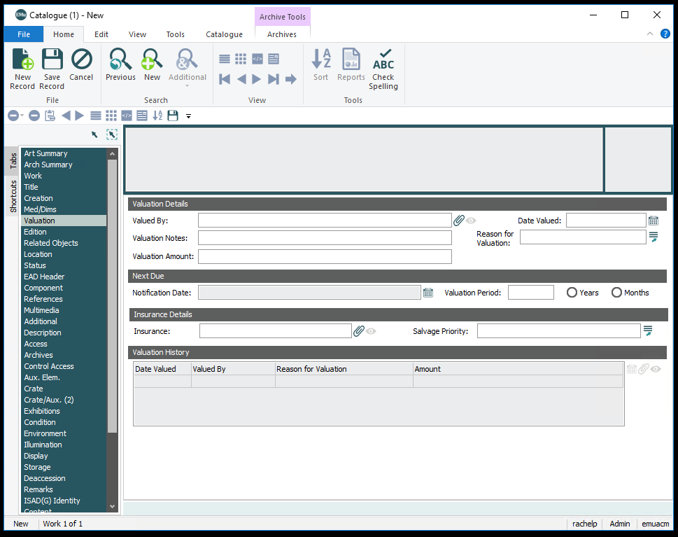
Valuation Details
Valued By
Person or organization who performed the valuation. This is an attachement field, go to Parties Module for more information about this field.
Date Valued
Accession Lot Number numbers are assigned to all activities related to objects, such as the purchase, donation, exhibition, or deaccession of an object or group of objects. The number represents the activity itself. For group activities, each object in the acquisition, exhibition, or deaccession is assigned the same Accession Lot Number in order to eliminate repetitive data entry. Numbering schemes vary by type of activity.
Valuation Notes
Accession Lot Number numbers are assigned to all activities related to objects, such as the purchase, donation, exhibition, or deaccession of an object or group of objects. The number represents the activity itself. For group activities, each object in the acquisition, exhibition, or deaccession is assigned the same Accession Lot Number in order to eliminate repetitive data entry. Numbering schemes vary by type of activity.
Reason for Valuation
Accession Lot Number numbers are assigned to all activities related to objects, such as the purchase, donation, exhibition, or deaccession of an object or group of objects. The number represents the activity itself. For group activities, each object in the acquisition, exhibition, or deaccession is assigned the same Accession Lot Number in order to eliminate repetitive data entry. Numbering schemes vary by type of activity.
Valuation Amount
Accession Lot Number numbers are assigned to all activities related to objects, such as the purchase, donation, exhibition, or deaccession of an object or group of objects. The number represents the activity itself. For group activities, each object in the acquisition, exhibition, or deaccession is assigned the same Accession Lot Number in order to eliminate repetitive data entry. Numbering schemes vary by type of activity.
Next Due
Notification Date
This field is not used.
Valuation Period
This field is not used.
Years/Months
This field is not used.
Insurance Details
Insurance
This field is not used.
Salvage Priority
Options 1-4 for salvage priority.
Valuation History
A history of the value of the work. Links to the Valuation Module.
Edition
Displays catalogue records attached to lot.
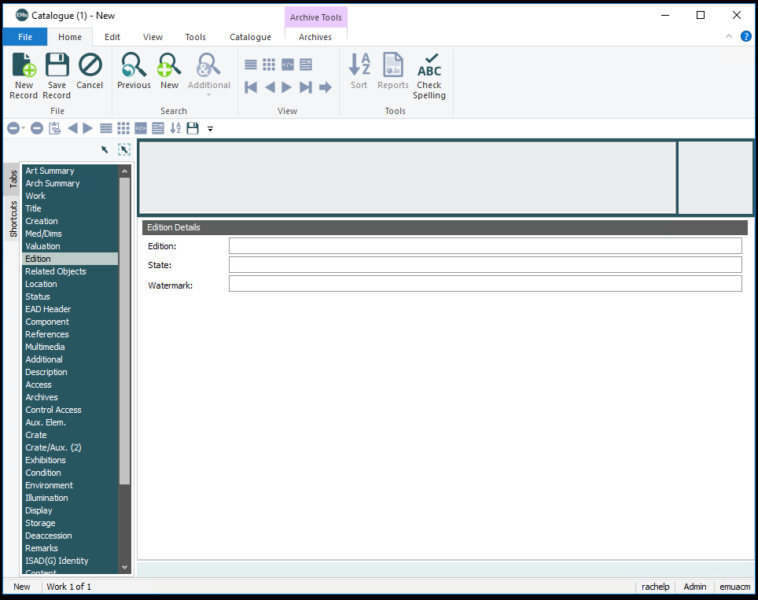
Edition Details
Edition
Edition information may be recorded for Prints and Photographic Prints. By definition, a print is one among multiple copies of a single image. An edition is a set of identical prints, which may be numbered and/or signed.
Proofs are prints authorized by the artist in addition to the limited edition. If a set of proofs consists of more than one print, numbers are usually inscribed to indicate the number of prints within the total number of the particular type of proof, (e.g. AP 5/20 designates the fifth print in a set of 20 identical prints authorized as artist’s proofs).
Artist’s Proof (AP) -Print intended for the artist’s personal use; sometimes referred to by its French
Cancellation Proof (CP) -Final print made once an edition series has been finished, to show that the plate has been marred or mutilated by the artist and will never again be used to make more prints of the edition.
Hors d’Commerce Proof (HP) -Print identical to the edition print intended to be used as a sample to show to dealers and galleries.
Printer’s Proof (PP) -Print retained by the printer as a reference.
Trial Proof (TP) -Precursor to a limited edition series, pulled so that the artist may examine and refine the print to the desired state.
Format
number of print / total number of prints in edition (if known, number of PP, AP, TP)
P1998.97.17
30/50 (5 PP, 5 AP)
Record the number of the edition in Arabic numerals.
Proofs are recorded separately from the total edition. Do not include any proofs in the numerical figure for the total edition.
If the number of prints in the edition is known but (to the cataloguer’s best knowledge) the artist did not number the individual prints, record “From an edition of total number of prints”.
If the number of prints in the edition is known and (to the cataloguer’s best knowledge) the edition was numbered, but the specific number of the print has been lost or otherwise obscured, record a question mark in place of the specific number of the print, i.e. “?/100”.
If the print is from an edition of historical prints of which the approximate total number is known, record “number of print/ approx. total no.” or “From an edition of approx. total no.”
If the print from a numbered portfolio but is itself not numbered, record the number of the portfolio for all associated prints: “Portfolio no./total no.” or “Portfolio no.”
If the print is a proof print of any type, record the proof type according to the boldfaced abbreviations listed above, followed by the edition number of the proof, if known, followed by the statistics for the entire edition in parentheses, e.g. “PP 1/3 (Edition of 30, 3 AP, 3 PP)”, “AP (Edition of 50)”.
If the edition is documented to be open or unlimited, record “Open edition” or “Unlimited edition”.
Prints from a second or later edition bear the same image as the original edition but have been altered in some fundamental way, such as change of ink color, paper, or printing process. When this information is known, record the number of the edition with English ordinal, e.g. “Second ed.”
State
A state is defined as prints from an edition in which the artist had made changes in the plate, stone, or block to produce a variant of the original image. If the print exists in more than one edition, the number of states may vary between edition. If the print only exists in a single state, the state may not be recorded, or at the curator’s option may read, “only known state”.
Format
number of state / total number of states
i/x
Record the number of the state in lower case Roman numerals.
If the total number of states is not known, record merely the number of state, “state n.”
Watermark
Design impressed in paper during manufacture. Record exactly. The name of the paper manufacturer should be noted as it appears in the watermark. If a partial watermark appears, but you recognize the watermark, complete the notation in brackets. “Watermark” may be shortened to the standard abbreviation “wmk.” It is not necessary to note the location of the watermark. If a partial watermark appears, and you do not recognize it, note the mark as it appears and place the word “partial” in brackets after the notation. If there is not a watermark, it is not necessary to use “none”.
Watermark: RIV[ES]
Watermark: WAT [partial]
Related Objects
Displays catalogue records attached to lot.
Is a parent?
Accession Lot Number numbers are assigned to all activities related to objects, such as the purchase, donation, exhibition, or deaccession of an object or group of objects. The number represents the activity itself. For group activities, each object in the acquisition, exhibition, or deaccession is assigned the same Accession Lot Number in order to eliminate repetitive data entry. Numbering schemes vary by type of activity.
Parent Object
Accession Lot Number numbers are assigned to all activities related to objects, such as the purchase, donation, exhibition, or deaccession of an object or group of objects. The number represents the activity itself. For group activities, each object in the acquisition, exhibition, or deaccession is assigned the same Accession Lot Number in order to eliminate repetitive data entry. Numbering schemes vary by type of activity.
Related Objects
Related Objects
Object relationships are recorded on the Related tab in Argus. Each related work must already have its own object record before it can be linked to any other object.
For all relationships (subject, study, duplicate, or negative/print), entry of a valid accession number in the Related ID field automatically establishes a link with that object record and performs the appropriate entry in the second record. The cataloguer does not need to open the second object record to repeat the data entry process.
Relationship
Accession Lot Number numbers are assigned to all activities related to objects, such as the purchase, donation, exhibition, or deaccession of an object or group of objects. The number represents the activity itself. For group activities, each object in the acquisition, exhibition, or deaccession is assigned the same Accession Lot Number in order to eliminate repetitive data entry. Numbering schemes vary by type of activity.
Relation
Links to...
Description
Bound volume
Bound volume
Use for works bound together
Copy
Original
Use to link original objects to later formats (original positive to copy negative, etc.)
Duplicate
Duplicate
Use to link duplicate objects, usually prints
Print
Negative/Transparency
Use to link print to negative or transparency
Final work
Study
Use to link final work to studies and vice versa
Frame
Fits Object
Use to link a frame to any corresponding objects
Group
Group
Use to link groups of works not otherwise readily apparent in title or accession number
Part
Whole
Use to link objects (prints, one bookend, etc.) in a portfolio, album, pair, triptych, etc., to the whole group record
Partial
Partial
Use to link other parts of compound object when no whole group record
Series
Series
Use to link distinct objects from a titled series.
Subject
Subject
Use to link objects that have the same subject matter
Location
Displays catalogue records attached to lot.
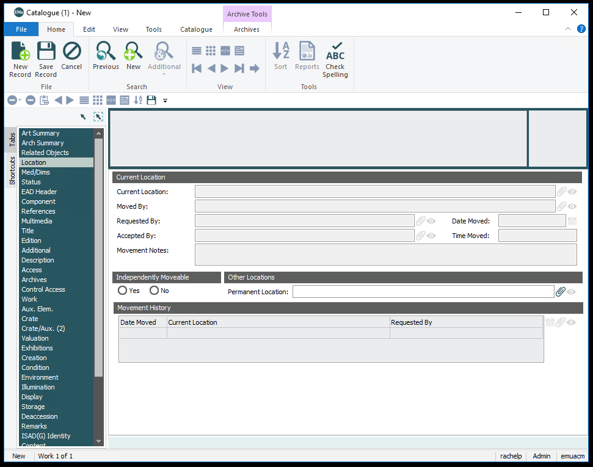
Current Location
Current Location
Accession Lot Number numbers are assigned to all activities related to objects, such as the purchase, donation, exhibition, or deaccession of an object or group of objects. The number represents the activity itself. For group activities, each object in the acquisition, exhibition, or deaccession is assigned the same Accession Lot Number in order to eliminate repetitive data entry. Numbering schemes vary by type of activity.
Moved By
Person who performed moved the object. This is an attachement field, go to Parties Module for more information about this field.
Requested By
Person who performed moved the object or requested the object be moved. This is an attachement field, go to Parties Module for more information about this field.
Accepted By
Registrar who updated the location in EMu. This is an attachement field, go to Parties Module for more information about this field.
Date Moved
Accession Lot Number numbers are assigned to all activities related to objects, such as the purchase, donation, exhibition, or deaccession of an object or group of objects. The number represents the activity itself. For group activities, each object in the acquisition, exhibition, or deaccession is assigned the same Accession Lot Number in order to eliminate repetitive data entry. Numbering schemes vary by type of activity.
Time Moved
Accession Lot Number numbers are assigned to all activities related to objects, such as the purchase, donation, exhibition, or deaccession of an object or group of objects. The number represents the activity itself. For group activities, each object in the acquisition, exhibition, or deaccession is assigned the same Accession Lot Number in order to eliminate repetitive data entry. Numbering schemes vary by type of activity.
Movement Notes
Accession Lot Number numbers are assigned to all activities related to objects, such as the purchase, donation, exhibition, or deaccession of an object or group of objects. The number represents the activity itself. For group activities, each object in the acquisition, exhibition, or deaccession is assigned the same Accession Lot Number in order to eliminate repetitive data entry. Numbering schemes vary by type of activity.
Independently Moveable
Independently Moveable
Accession Lot Number numbers are assigned to all activities related to objects, such as the purchase, donation, exhibition, or deaccession of an object or group of objects. The number represents the activity itself. For group activities, each object in the acquisition, exhibition, or deaccession is assigned the same Accession Lot Number in order to eliminate repetitive data entry. Numbering schemes vary by type of activity.
Other Locations
Permanent Location
Accession Lot Number numbers are assigned to all activities related to objects, such as the purchase, donation, exhibition, or deaccession of an object or group of objects. The number represents the activity itself. For group activities, each object in the acquisition, exhibition, or deaccession is assigned the same Accession Lot Number in order to eliminate repetitive data entry. Numbering schemes vary by type of activity.
Movement History
Accession Lot Number numbers are assigned to all activities related to objects, such as the purchase, donation, exhibition, or deaccession of an object or group of objects. The number represents the activity itself. For group activities, each object in the acquisition, exhibition, or deaccession is assigned the same Accession Lot Number in order to eliminate repetitive data entry. Numbering schemes vary by type of activity.
Multimedia
As we continue to update EMu, we are adding more important documents for easy access. Accession lots Multimedia tab is only accessible to Curatorial, Registrar and Conservation groups. New lots should have scans of the following:
Acquisition Proposal
Deed of Gift
Other potential notes or supporting documentation
Remarks
General confidential information is recorded in the Remarks field. This information is categorically restricted from release to the general public and may be used by the Curator or Collection Services to record confidential information, to be restricted to select ACM staff only. This does not include portfolio cover locations, object appraisals, condition reports, or exhibition restrictions.
Notes
As we continue to update EMu, we are adding more important documents for easy access. Accession lots Multimedia tab is only accessible to Curatorial, Registrar and Conservation groups. New lots should have scans of the following:
Acquisition Proposal
Deed of Gift
Other potential notes or supporting documentation
Illumination
Displays catalogue records attached to lot.
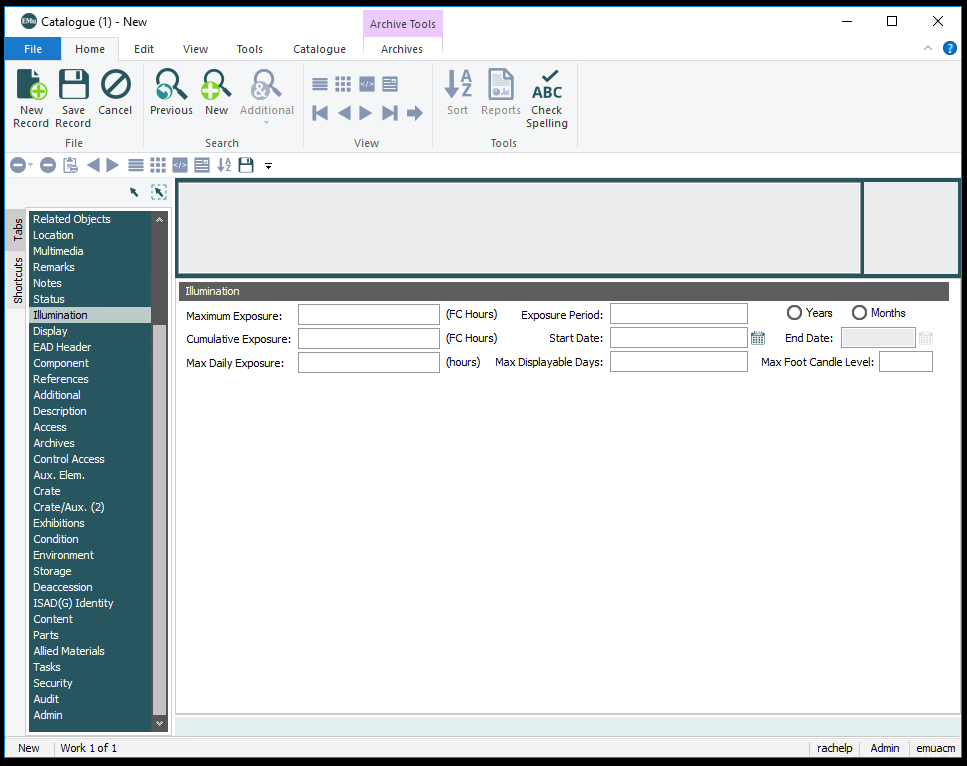
Illumination
Maximum Exposure
Not used.
Cumulative Exposure
Not used.
Max Daily Exposure
Not used.
Exposure Period
Not used.
Start Date
Date last light level measurement was taken.
End Date
Not used.
Max Displayable Days
Number of days a work can be displayed at current light level.
Max Foot Candle Level
Highest foot candle level the work can be displayed at.
Display
Displays catalogue records attached to lot.
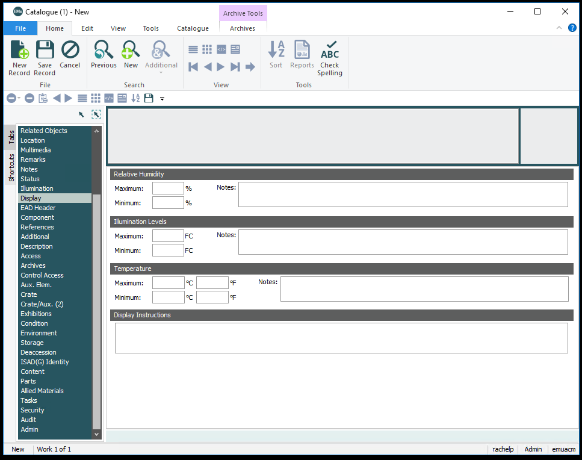
Relative Humidity
Maximum
Maximum humidity a work can be displayed.
Minimum
Minimum humidity a work can be displayed.
Notes
Any notes regarding the humidity of the display of the object.
Illumination Levels
Maximum
Maximum light level a work can be stored or displayed in foot candles.
Minimum
Minimum light level a work can be stored or displayed in foot candles.
Notes
Any notes regarding the light level of the display of the object.
Temperature
Maximum
Maximum temperature a work can be stored or displayed in celsius.
Minimum
Minimum temperature a work can be stored or displayed in celsius.
Maximum
Maximum temperature a work can be stored or displayed in fahrenheit.
Minimum
Minimum temperature a work can be stored or displayed in fahrenheit.
Notes
Any notes regarding the temperature of the display of the object.
Display Instructions
Any additional notes about displaying the object. Examples include: keep covered when not on view or flip the page every two weeks.
Condition
Displays catalogue records attached to lot.
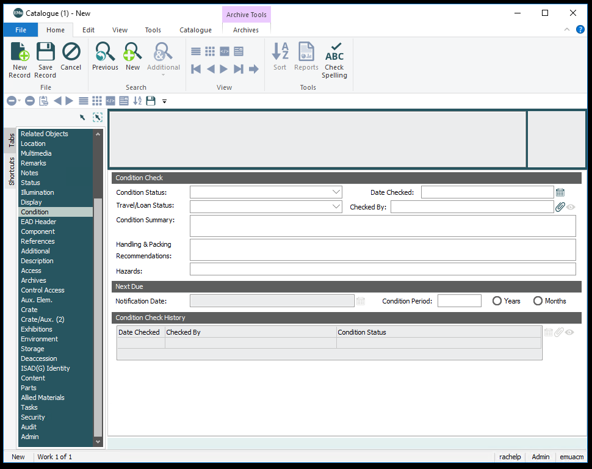
Condition Check
Condition Status
Overall condition of the work. It is also used to signify that there is an attachement in the condition field.
Excellent
Fair
Fragile
Good
Poor
Pristine
Stable
Unstable
Very Good
Report Attached
Date Checked
Date the condition check was performed
Travel/Loan Status
Conservation needed
May not travel
Needs conservation review
OK to travel
Outgoing loan
Returning loan
Checked By
Person who performed the condition check. This is an attachement field, go to Parties Module for more information about this field.
Condition Summary
Handling & Packing Recommendations
Any recommendations for loan including special crating or use of mylar. This field is optional.
Hazards
Treatment recommendations. This field is optional.
Next Due
Notification Date
This field is not used.
Condition Period
This field is not used.
Years/Months
This field is not used.
Condition Check History
A history of the condition. Each entry links to a condition record where additional data and multimedia are stored.
References
Displays catalogue records attached to lot.
Copyright/Rights
Copyright
The date of copyright and the copyright holder are recorded, whether the holder is the Amon Carter Museum or any other entity. Should match the information in the rights record.
Attachment field from the Rights module. The Rights record will have more details for specific rights information.
Verified By
Person who verified the rights information. Each time research is performed, update this field. This is an attachement field, go to Parties Module for more information about this field.
Date
Date the rights informaiton was verified. Each time research is performed, update this field.
Reproduction Restrictions
Literary References
Catalogue Raisonne
Accession Lot Number numbers are assigned to all activities related to objects, such as the purchase, donation, exhibition, or deaccession of an object or group of objects. The number represents the activity itself. For group activities, each object in the acquisition, exhibition, or deaccession is assigned the same Accession Lot Number in order to eliminate repetitive data entry. Numbering schemes vary by type of activity.
Bibliographic References
Accession Lot Number numbers are assigned to all activities related to objects, such as the purchase, donation, exhibition, or deaccession of an object or group of objects. The number represents the activity itself. For group activities, each object in the acquisition, exhibition, or deaccession is assigned the same Accession Lot Number in order to eliminate repetitive data entry. Numbering schemes vary by type of activity.
Bibliographic Notes
Accession Lot Number numbers are assigned to all activities related to objects, such as the purchase, donation, exhibition, or deaccession of an object or group of objects. The number represents the activity itself. For group activities, each object in the acquisition, exhibition, or deaccession is assigned the same Accession Lot Number in order to eliminate repetitive data entry. Numbering schemes vary by type of activity.
EAD Header
Displays finding aid and collection information for archival materials.
Unique code for repository. Will almost always be: "us-txfacm".
Unit ID
Any alpha-numeric text string that serves as a unique reference point or control number for the described material, such as a lot number, an accession number, a classification number, or an entry number in a bibliography or catalog. Accession Number.
Level Attribute
What level in the Archive hierarchy, e.g. Fonds, Series, Sub-fond, Sub-series, etc.
Displays finding aid and collection information for archival materials.
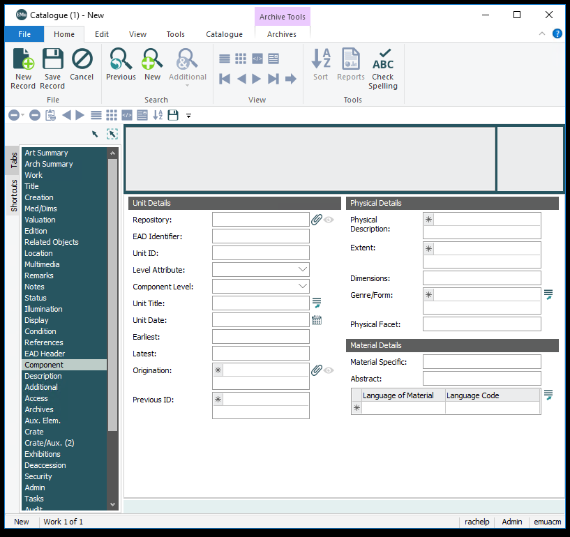
Unit Details
Repository
The institution or agency responsible for providing intellectual access to the materials being described. Links to Parties Module.
EAD Identifier
Unique code for repository. Will almost always be: "us-txfacm".
Unit ID
Any alpha-numeric text string that serves as a unique reference point or control number for the described material, such as a lot number, an accession number, a classification number, or an entry number in a bibliography or catalog. Accession Number.
Level Attribute
What level in the Archive hierarchy, e.g. Fonds, Series, Sub-fond, Sub-series, etc.
Component Level
Numeric value identifying level in hierarchy.
Unit Title
Title of item.
Unit Date
Date of item. Follow date instructions found here here.
Earliest
Used for searching. Earliest probable creation date. Look for more details here.
Latest
Used for searching. Earliest probable creation date. Look for more details here.
Origination
Information about the individual or organization responsible for the creation, accumulation, or assembly of the described materials before their incorporation into an archival repository.
Previous ID
Previous number. Could be a loan number or a number at the previous institution.
Physical Details
Physical Description
A wrapper element for bundling information about the appearance or construction of the described materials, such as their dimensions, a count of their quantity or statement about the space they occupy, and terms describing their genre, form, or function, as well as any other aspects of their appearance, such as color, substance, style, and technique or method of creation.
Extent
Information about the quantity of the materials being described or an expression of the physical space they occupy. Includes such traditional archival measurements as cubic and linear feet and meters; also includes counts of microfilm reels, photographs, or other special formats, the number of logical records in a database, or the volume of a data file in bytes.
Dimensions
Dimensions are height x width x depth, unless noted otherwise.
Genre/Form
A term that identifies the types of material being described, by naming the style or technique of their intellectual content (genre); order of information or object function (form); and physical characteristics. Examples include: account books, architectural drawings, portraits, short stories, sound recordings, and videotapes.
Physical facet
A subelement for information about an aspect of the appearance of the described materials, such as their color, style, marks, substances, materials, or techniques and methods of creation. It is used especially to note aspects of appearance that affect or limit use of the materials. It generally should not be used for aspects of physical description that are covered more directly by the , , and elements, although use of may be appropriate for further specification within some instances.
Material Details
Material Specific
Data which are unique to a particular class or form of material and which are not assigned to any other element of description. Examples of material specific details include mathematical data, such as scale for cartographic and architectural records, jurisdictional and denominational data for philatelic records, and physical presentation data for music records.
Abstract
Derived from finding aid. A very brief summary of the materials being described, used primarily to encode bits of biographical or historical information about the creator and abridged statements about the scope, content, arrangement, or other descriptive details about the archival unit or one of its components.
Language of Material
Language of archival documents. Will almost always be "English".
Language Code
Code of language of archival documents. Will almost always be "eng".
Description
Displays finding aid and collection information for archival materials.
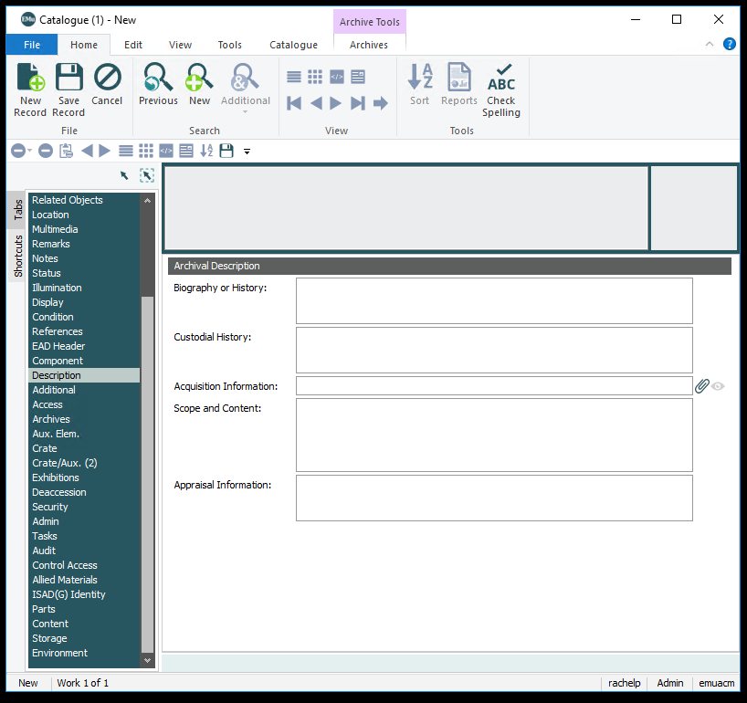
Archival Description
Biography or History
Derived from finding aid. A concise essay or chronology that places the archival materials in context by providing information about their creator(s). Includes significant information about the life of an individual or family, or the administrative history of a corporate body.
Custodial History
Derived from finding aid. Information about the chain of ownership of the materials being described, before they reached the immediate source of acquisition. Both physical possession and intellectual ownership can be described, providing details of changes of ownership and/or custody that may be significant in terms of authority, integrity, and interpretation.
Acquisition Information
The immediate source of the materials being described and the circumstances under which they were received. Includes donations, transfers, purchases, and deposits. Links to Accession Lots
Scope and Content
Derived from finding aid. A prose statement summarizing the range and topical coverage of the described materials, often mentioning the form and arrangement of the materials and naming significant organizations, individuals, events, places, and subjects represented. The purpose of the scope and content is to assist readers in evaluating the potential relevance of the materials to their research. It may highlight particular strengths of, or gaps in, the described materials and may summarize in narrative form some of the descriptive information entered in other parts of the finding aid.
Appraisal Information
Derived from finding aid. Information about the process of determining the archival value and thus the disposition of records based upon their current administrative, legal, and fiscal use; their evidential, intrinsic, and informational value; their arrangement and condition; and their relationship to other records.
Additional
Displays finding aid and collection information for archival materials.
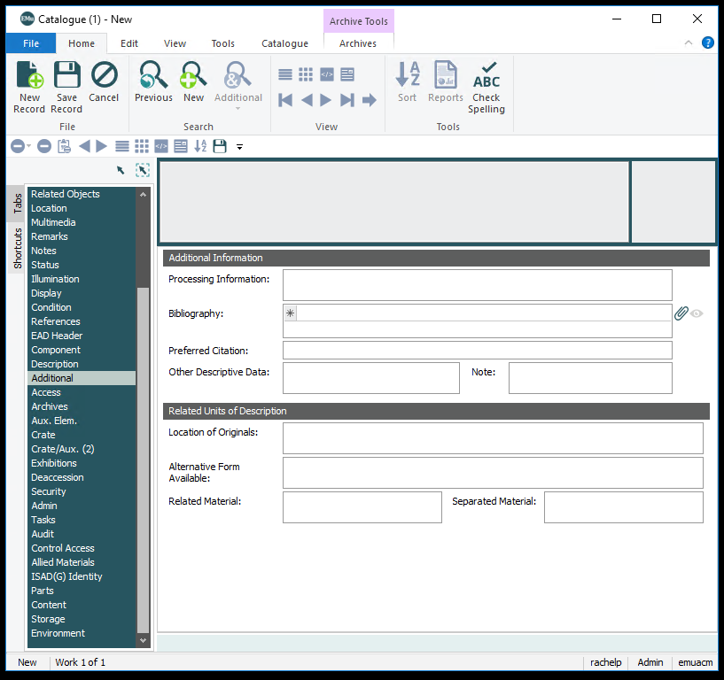
Additional Information
Processing Infomation
Derived from finding aid. Information about accessioning, arranging, describing, preserving, storing, or otherwise preparing the described materials for research use.
Bibliography
Citations to works that are based on, about, or of special value when using the materials being described, or works in which a citation to or brief description of the materials is available. The works could be books, articles, television programs, unpublished reports, web sites, or other forms of information. Links to Bibliography Module.
Prefered Citation
Derived from finding aid. Information about how users should identify the described materials when referring to them in published credits. Generally the repository or agent responsible for providing intellectual access to the materials will supply users with a recommended wording or prescribed format for structuring references to the described materials in bibliographies, footnotes, screen credits, etc.
Other Descriptive Data
An element for information about the described materials that is not easily incorporated into one of the other named elements within. Here used as a "keywords" field.
Note
Not used.
Related Units of Description
Location of Originals
Information about the existence, location, availability, and/or the destruction of originals where the unit described consists of copies.
Alternative Form Available
Information about copies of the materials being described, including the type of alternative form, significant control numbers, location, and source for ordering if applicable. The additional formats are typically microforms, photocopies, or digital reproductions.
Related Material
Information about materials that are not physically or logically included in the material described in the finding aid but that may be of use to a reader because of an association to the described materials. Materials designated by this element are not related to the described material by provenance, accumulation, or use.
Separated Material
Information about materials that are associated by provenance to the described materials but that have been physically separated or removed.
Access
Displays finding aid and collection information for archival materials.
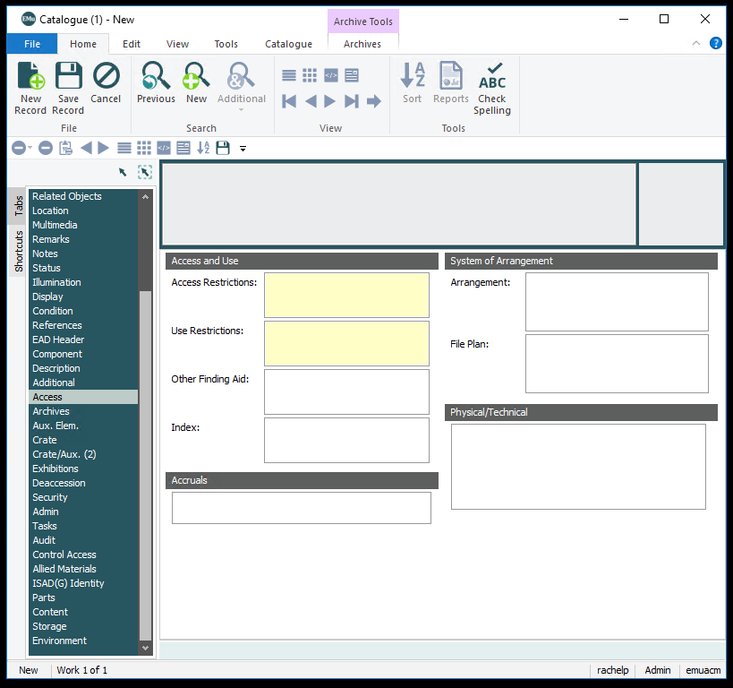
Access and Use
Access Restrictions
Derived from finding aid. Information about conditions that affect the availability of the materials being described. May indicate the need for an appointment or the nature of restrictions imposed by the donor, legal statute, repository, or other agency. May also indicate the lack of restrictions.
Use Restrictions
Derived from finding aid. Information about conditions that affect use of the described materials after access has been granted. May indicate limitations, regulations, or special procedures imposed by a repository, donor, legal statute, or other agency regarding reproduction, publication, or quotation of the described materials. May also indicate the absence of restrictions, such as when copyright or literary rights have been dedicated to the public.
Other Finding Aid
Information about additional or alternative guides to the described material, such as card files, dealers' inventories, or lists generated by the creator or compiler of the materials. It is used to indicate the existence of additional finding aids; it is not designed to encode the content of those guides.
Index
Not used.
System of Arrangement
Arrangement
Derived from finding aid. Information on how the described materials have been subdivided into smaller units, e.g., record groups into series, identifying the logical or physical groupings within a hierarchical structure. Can also be used to express the filing sequence of the described materials, such as the principle characteristics of the internal structure, or the physical or logical ordering of materials, including alphabetical, chronological, geographical, office of origin, and other schemes. Identifying logical groupings and the arrangement pattern may enhance retrieval by researchers.
File Plan
Derived from finding aid. Information about any classification scheme used for arranging, storing, and retrieving the described materials by the parties originally responsible for creating or compiling them. A filing plan is usually identified by the type of system used, e.g., alphabetical, numerical, alpha-numerical, decimal, color-coded, etc. It is often hierarchical and may include the filing guidelines of the originating organization. Additional types include a drawing of a room layout or a scientific scheme.
Accruals
Information about anticipated additions to the materials being described. Can indicate quantity and frequency. Can also be used to indicate that no additions are expected.
Physical/Technical
A description of important physical conditions or characteristics that affect the storage, preservation, or use of the materials described. This includes details of their physical composition or the need for particular hardware or software to preserve or access the materials.
Aux. Elem
Frame specific information.
Object Details
Collection
Same as collection type. For more information go here.
Contains Artwork?
If the frame is stored with artwork inside, yes will be checked.
Integral
If the frame is a part of the work and cannot be easily be removed, check yes.
Auxiliary Element Details
Aux. Elem. Type
Not used.
Aux. Elem. Sub-Type
Not used.
Aux. Elem. Number
Not used.
Auxilary Element Desciption
Material
Metal or wood
Finish
Color of wood or metal
Moulding
Yes or No
Glazing
Yes or No
Description
Finish
Dimensions
Type
Type of dimension. Pulls from dimension type field on the Med/Dims Tab. Could be used to define outer versus inner framed dimensions.
Height
Height in inches, rounded to the nearest 1/8 inch.
Width
Width in inches, rounded to the nearest 1/8 inch.<
Depth
Depth in inches, rounded to the nearest 1/8 inch.<
Unit
"inches"
Maker
Maker
Creator of frame. Attaches to Parties Module, see more information here.
Crate
Crate specific information.
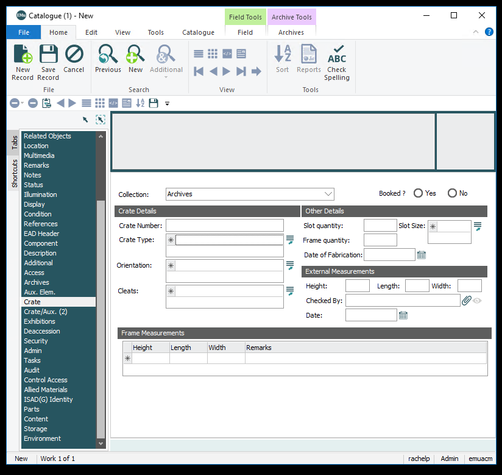
Collection
Collection
Same as collection type. For more information go here.
Booked
Booked
If currently used, click yes.
Crate Details
Crate Number
Unique crate number used for tracking.
Type
Used to describe the kind of crate. Multiple terms can be used. So you could have an inner box with a wood bolt closure and you would select both terms, starting from the outside and going inside.
Inner Box
Fiberglass
Travel frame
Wood bolt closure
Wood screw closure
Orientation
Orientation of the crate
Ride flat
Ride as indicated - horizontal
Ride as indicated - on side
Ride as indicated - vertical
Cleats
Number of cleats. If none enter 0.
Other Details
Slot quantity
Number of slots. If none enter 0.
Slot size in inches
Number of cleats. If none enter 0.
Frame quantity
Not used.
Date of Fabrication
Date crate was fabricated.
External Measurements
Height
External height of crate in inches, rounded to the nearest 1/8 inch.
Length
External length of crate in inches, rounded to the nearest 1/8 inch.
Width
External width of crate in inches, rounded to the nearest 1/8 inch.
Checked by
The person who verified measurements.
Date
Date crate external measurements were taken.
Frame Measurements
Height
The height of the trays in the crate.
Length
The length of the trays in the crate.
Width
The width of the trays in the crate.
Remarks
Any notes about tray measurements.
Crate/Aux.
Information regarding objects housed in frames and crates.
Objects
Objects
Objects that traveled in frame or crate.
Date
Date object traveled in frame or crate.
Notes
Notes about object.
Associated Event
Event
Exhibition where crate was used.
Exhib. No
Not used.
Notes
Notes about exhibition.
Exhibitions
Exhibition wall label and requirements.
Wall Label
Automatic
Automatically generate wall label. Yes or No. If you need to add custom data like a second artist, click no.
Label
Label text. By default, auto generated.
Automatic Label Text Format*
First artist label field
Title, date
Medium
Accession number
*You can add additonal data or make edits by checking "No" for the Automatic field.
Installation Requirements
Not used.
Exhibition Requirements
Not used.
Deaccessions
Exhibition wall label and requirements.
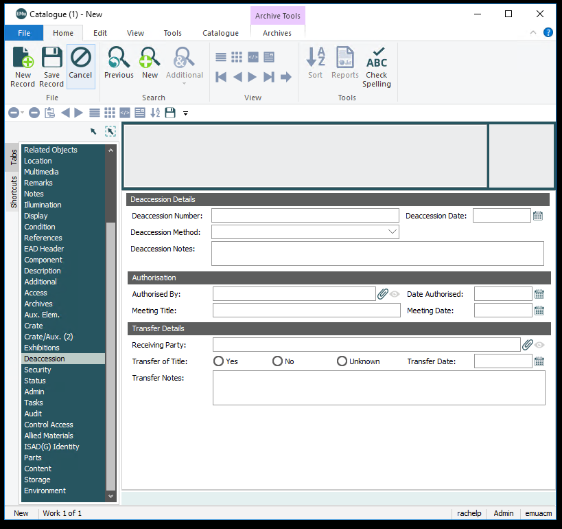
Deaccession Details
Deaccession Number
Identifies when and in what group the object was deaccessioned. Assigned chronologically to objects or groups of objects deaccessioned to the same party at the same time.
Deaccession Date
Date on which the object was officially deaccessioned.
Deaccession Method
Method involved in the deaccessioning of an object, e.g., sale or transfer.
Exchange
Sale
Transfer
Unknown
Deaccession Notes
Notes pertaining to the deaccessioning of an object or group of objects.
Authorisation
Authorised By
ACM staff member or committee who authorised the deaccessioning of the object. Links to the Parties module.
Date Authorised
Date on which the deaccessioning of the object or group of objects was authorized.
Meeting Title
Title given to an official meeting to approve a deaccession.
Meeting Date
Date on which the deaccession meeting took place.
Transfer Details
Receiving Party
The person or institution that received the deaccessioned object(s). Links to the Parties module.
Transfer of Title
Notes whether title was transferred to receiving party of the deaccessioned object(s).
Transfer Date
Date on which the official transfer of ownership occurred.
Transfer Notes
Notes pertaining to the transfer of the deaccessioned object.
Security
Exhibition wall label and requirements.
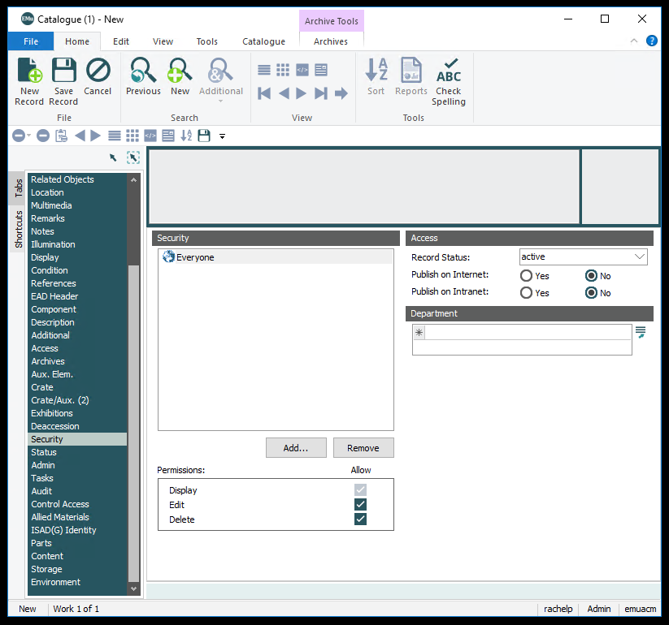
Security
Deaccession Number
Automatically generate wall label. Yes or No. If you need to add custom data like a second artist, click no.
Access
Record Status
Active- Works that are still active in the database. All records by default are active.
Retired- Works that are no longer active in the database. For the catalogue, this is used for placeholder records. Admin can still see them, but other users cannot. This field is used more in Locations, where locations that no longer exist are retired. This keeps them in the database, so the location history is in tact, but removes them from the search.
Publish on Internet
IMPORTANT. This field is used to determine if something should be sent to the website. This field indicates that proper checks have been made and that this should be online. This field is sent to Piction and will be used by Piction Admin to determine if something should be put online.
Publish on Intranet
This sends the object to KE Lite. This will be minimally maintained right now to match the website.
Department
Not used.
Status
Exhibition wall label and requirements.
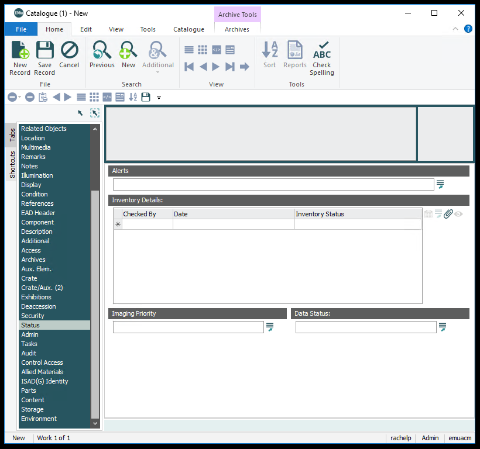
Alerts
General alert ranging from needing to get photographed to copyright issues.
Inventory Details
Use to track changes. If mediums or dimensions are verified or batch updates happen, update this field.